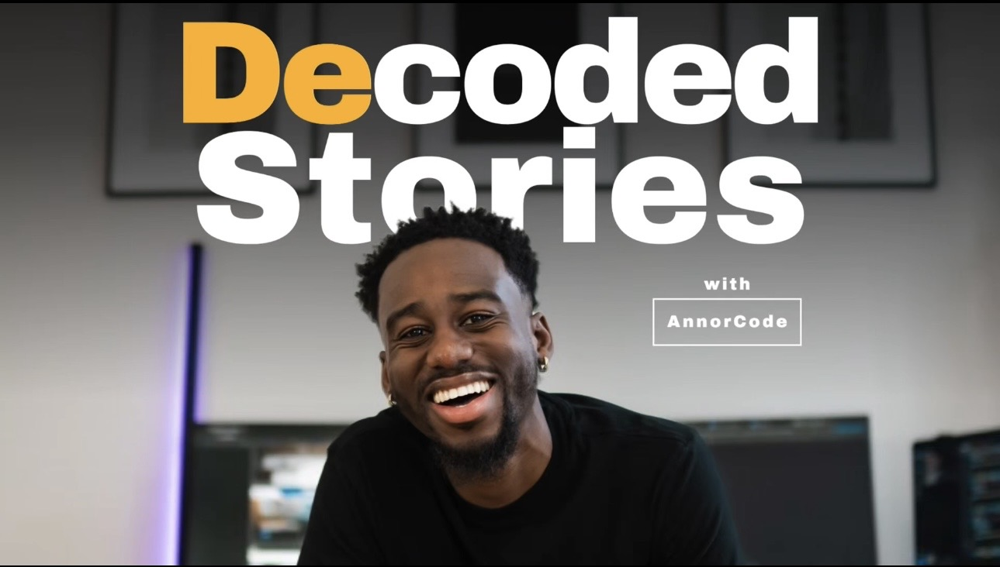

Podcast · Host & Creator
Decoded Stories
Stories people don’t usually tell. Real conversations that go past the highlight reel.

About the show
Decoded Stories is a podcast hosted by Nyamekye Annor. Most tech and creative podcasts stay on the surface level or are predictable. I wanted something different. My guests are tech professionals and creators of all sorts. I’m not just highlighting the work though. I believe people are more than what they do, and I’m actually curious who they are when the camera’s not pointed at them. How they think. How they process things. The highs, the lows, all of it. Most of my guests have told me it felt like a therapy session by the time we were done recording. Honestly that’s exactly what I’m going for. Getting past what an Instagram post or a reel could ever show you, and getting into who the person actually is.